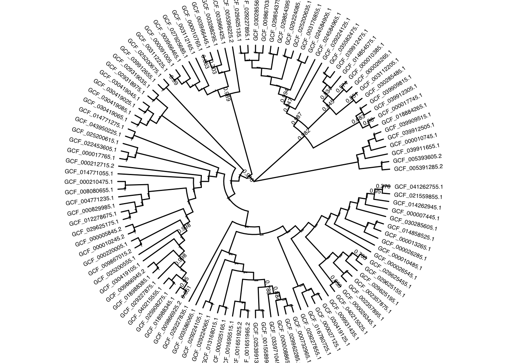
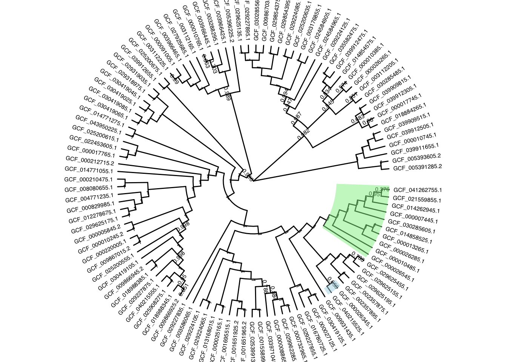
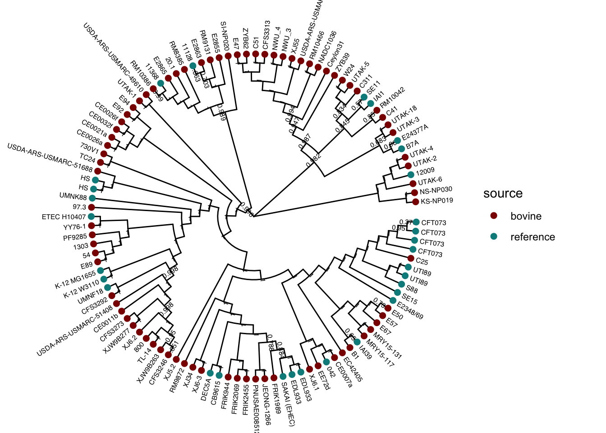
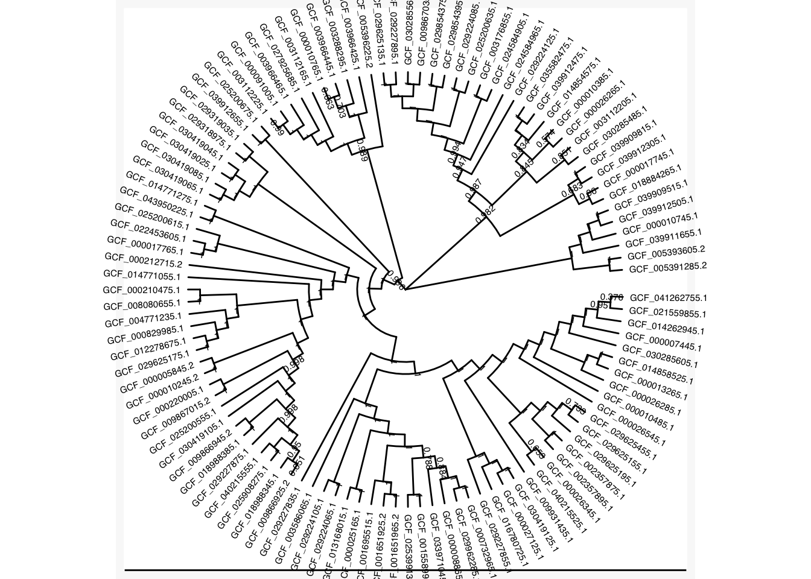
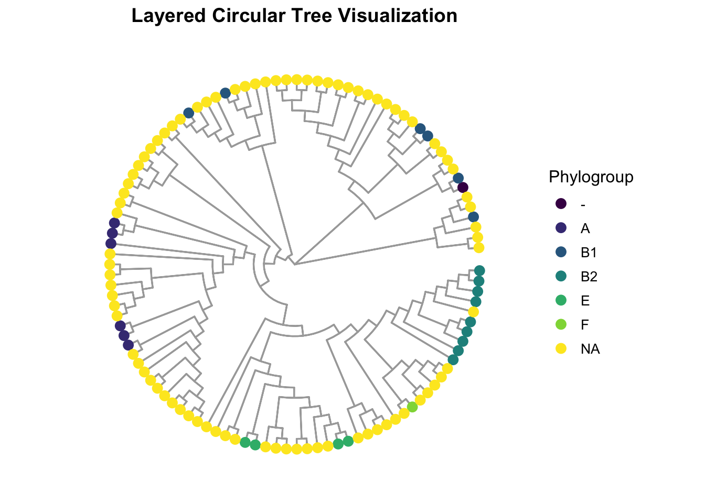
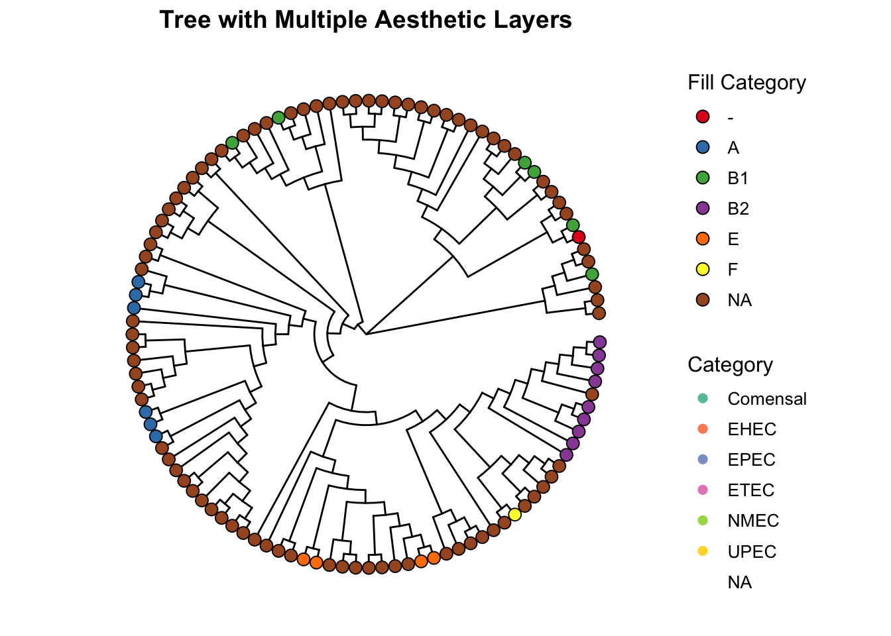

Chapter 6 ggtree Custom Recipes
We will load a phylogenetic tree in Newick format for demonstration.
Prepare session:
# Load a tree file
tree <- read.newick("data/example_2_phylo.nwk")
tree$node.label <- round(as.numeric(tree$node.label), digits = 3)6.1 Circular Layout Visualization
Circular layouts are excellent for presenting large or complex trees. They allow for efficient space usage and a visually appealing presentation.
# Circular tree with basic styling
circular_tree <- ggtree(tree, layout = "circular",
branch.length = "none") +
geom_tiplab(size = 2, aes(angle = angle), offset = 0.5) +
geom_nodelab(color = "black", size = 2, nudge_y = 0.5)
circular_tree
6.1.1 Highlighting Clades in Circular Trees
Highlighting specific clades can make the tree more interpretable. Use the geom_hilight function:
# Highlight specific clades
highlight_tree <- circular_tree +
geom_hilight(node = 199, fill = "lightblue", alpha = 0.5) +
geom_hilight(node = 200, fill = "lightgreen", alpha = 0.5)
highlight_tree
6.2 Adding Heatmaps to Circular Trees
We can add metadata as heatmaps around the tree:
# Cargar metadata
metadata <- readr::read_tsv("data/Experiment_Design_example_2.tsv")
colnames(metadata)[1] <- "label"
# The rows have to be in the same order as the tree
metadata_ordered <- metadata %>%
filter(label %in% tree$tip.label) %>%
arrange(match(label, tree$tip.label))
metadata_ordered$Phylogroup <- replace(metadata_ordered$Phylogroup, is.na(metadata_ordered$Phylogroup), "NA")
#Convert tree information to tibble object and add metadata
treetib <- as_tibble(tree)
treetib <- left_join(treetib, metadata_ordered, by = c('label'))
tree_ec <- as.treedata(treetib)
# Merge metadata with tree
p_circular_heatmap <- ggtree(tree_ec, layout = "circular",
branch.length = "none") +
geom_tiplab(size = 2, aes(label = Strain,angle = angle), offset = 0.5) +
geom_nodelab(color = "black", size = 2, nudge_y = 0.5)+
geom_tippoint(aes(color = source), size = 2) +
scale_color_manual(values = c("darkred", "darkcyan"))
p_circular_heatmap
6.3 Styling Trees with Advanced Themes
ggtree provides options to customize the appearance of trees using themes. Here’s how to use them effectively.
6.3.1 Customizing Themes for Trees
# Applying a theme with a clean background
styled_tree <- circular_tree +
theme_tree2() +
theme(
plot.background = element_rect(fill = "#f9f9f9", color = NA),
panel.border = element_blank(),
panel.grid = element_blank(),
axis.text = element_blank(),
axis.ticks = element_blank()
)
styled_tree
6.3.2 Adding Multiple Aesthetic Layers
Combine multiple layers for richer visuals:
# Adding node points and branches with customized colors
layered_tree <- ggtree(tree_ec, layout = "circular", branch.length = "none") +
geom_tree(color = "darkgrey", size = 0.6) +
geom_tippoint(aes(color = Phylogroup), size = 3) +
scale_color_viridis_d() +
theme(
legend.position = "right",
legend.title = element_text(size = 12),
legend.text = element_text(size = 10),
plot.title = element_text(size = 14, hjust = 0.5, face = "bold")
) +
ggtitle("Layered Circular Tree Visualization")
layered_tree
6.4 Combining Trees with ggnewscale
Use the ggnewscale package to add multiple scales of colors:
# Adding new scale for different metadata layers
multi_scale_tree <- ggtree(tree_ec, layout = "circular", branch.length = "none") +
geom_tippoint(aes(color = Patotype), size = 2) +
scale_color_brewer(palette = "Set2", name = "Category") +
ggnewscale::new_scale_color() +
geom_tippoint(aes(fill = Phylogroup), shape = 21, size = 3, color = "black") +
scale_fill_brewer(palette = "Set1", name = "Fill Category") +
theme(
legend.position = "right",
legend.title = element_text(size = 12),
legend.text = element_text(size = 10),
plot.title = element_text(size = 14, hjust = 0.5, face = "bold")
) +
ggtitle("Tree with Multiple Aesthetic Layers")
multi_scale_tree